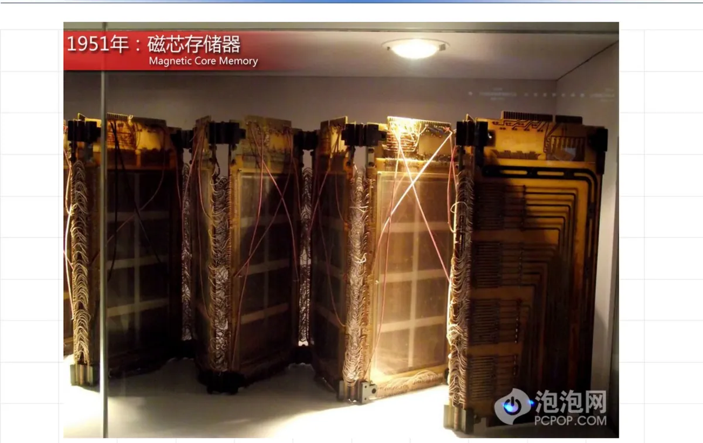
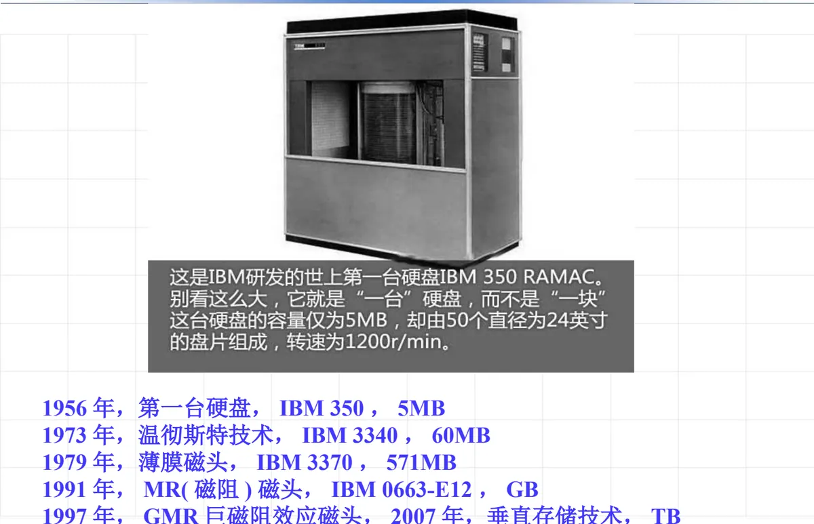
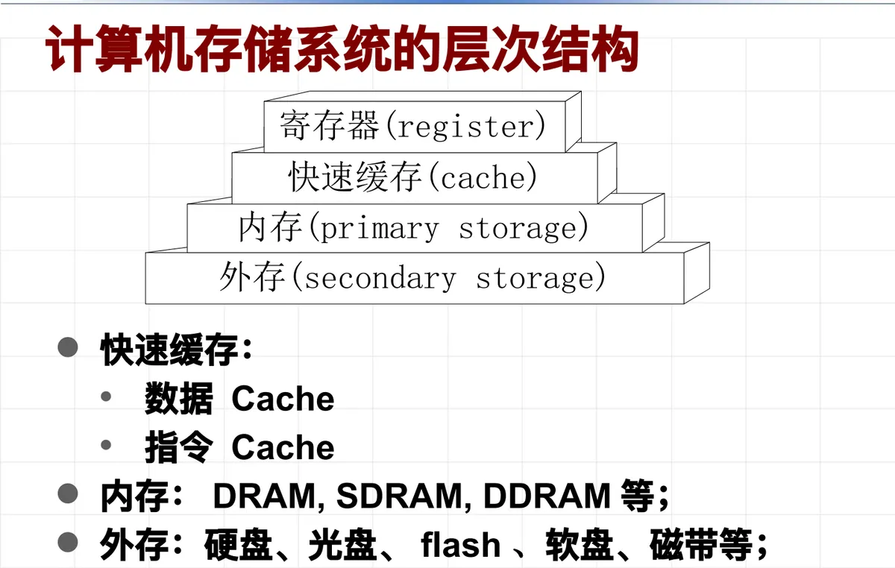
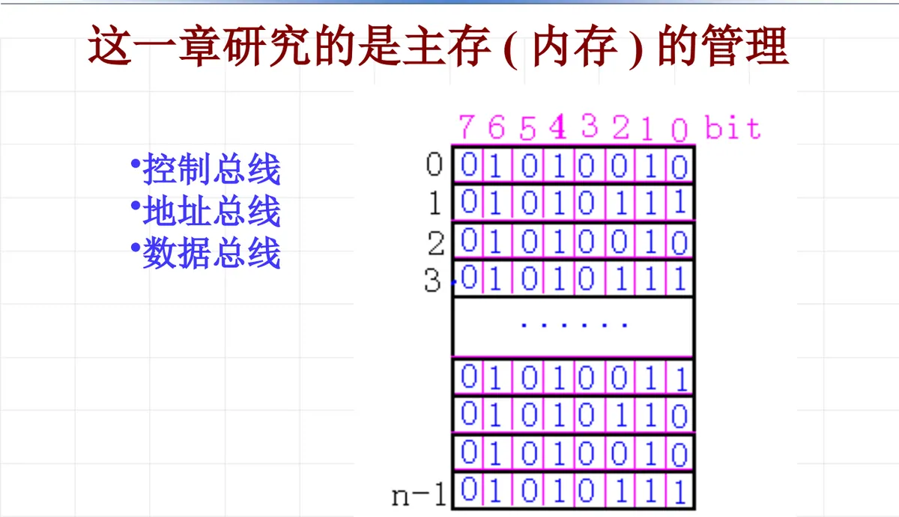

操作系统原理 · 第 7 章 主存管理
7.1 主存管理概述
这一节是第 7 章「主存管理」的开场。主存（内存）和 CPU 一样是计算机系统的重要资源，任何程序的执行最终都要从内存中存取指令和数据，而它又必须被多个进程共享——怎么把它管好，就是本章要回答的问题。这一节先把背景铺开：存储器从打孔卡、磁芯到半导体存储器的演进，存储器件的分类（RAM 与 ROM），以及存储系统的层次结构；最后落到正题上，点明主存管理要解决的地址映射、分配、保护和扩充四件事。
1. 计算机存储系统的发展
存储器的功能是保存数据。评价一种存储器，归根到底看三个指标：读写速度、容量和价格。存储器的发展方向是高速读写、大容量和小体积，但这几个目标彼此冲突——读写速度越快，成本越高，容量就越小；读取速度越慢，成本越低，容量就越大。所以合理的存储结构不能只挑一种存储器，而要依据访问速度的匹配关系、容量要求和价格来折中安排，这也正是后文层次结构的由来。
（1）存储器件：从打孔卡到半导体存储器
存储器件这条演化线可以按年代铺开。最早的存储方式还谈不上「器件」：1839 年的打孔卡（Punch Card）靠卡片上有没有孔来记录信息，纸带、卡片这类介质一直沿用到早期的计算机。20 世纪 50 年代，1951 年的磁芯存储器（Magnetic Core Memory）用穿在导线上的小磁环表示 0 和 1，成为此后二十多年主存的主流形式；1953 年出现的选数管（Selectron Tube）也是这一时期的存储尝试。半导体工艺成熟之后，局面彻底改变：1966 年出现了动态随机存储器（DRAM），1971 年推出可擦除可编程只读存储器（EPROM），1984 年闪存（Flash）问世，1993 年、1996 年又相继出现同步动态随机存储器（SDRAM）和双倍数据速率同步动态随机存储器（DDR SDRAM）。静态存储单元则以集成电路芯片的形式出现，早期常见的形态是一块 2K×8 位的 SRAM 芯片。

（2）磁盘：容量从 5MB 长到 TB 级
外存这条线的进步更直观，磁盘的几个里程碑能说明容量数量级是怎么被抬上去的：1956 年的第一台硬盘 IBM 350（RAMAC）容量只有 5MB，转速 1200 r/min；1973 年采用温彻斯特技术的 IBM 3340 把容量提高到 60MB；1979 年薄膜磁头使 IBM 3370 达到 571MB；1991 年 MR（磁阻）磁头用于 IBM 0663-E12，容量进入 GB 级；1997 年的 GMR（巨磁阻效应）磁头，以及 2007 年的垂直存储技术，又把硬盘容量推进到 TB 级。外存越做越大、越做越便宜，与内存的分工也越来越清楚：一个是长期存放大批数据的仓库，一个是 CPU 直接工作的场所。

2. 存储器件的分类：RAM 与 ROM
按读写特性，半导体存储器分成两大类。随机存取存储器 RAM（Random Access Memory）可以随时读出、随时写入，但断电后信息随之丢失；只读存储器 ROM（Read-Only Memory）出厂时内容已经固定，通常只能读出。两类器件下面又各自演化出若干成员，这是理解主存特性的基础。
（1）静态存储单元与动态存储单元
RAM 按存储单元的实现方式分为静态、动态两种：
- 静态存储单元 SRAM：速度快、使用简单、不需刷新、静态功耗极低，因此常用作高速缓存 Cache；
- 动态存储单元 DRAM：需要定期进行刷新，但集成度远高于 SRAM，功耗低，价格也低，因而适合做大容量的主存。
DRAM 本身也在演进。SDRAM（Synchronous Dynamic Random Access Memory，同步动态随机存储器）中的「同步」，是指内存工作需要同步时钟——读写操作与系统时钟步调一致，数据可以成批、流水地传送。SDRAM 从出现到现在已经经历了四代，分别是第一代 SDR SDRAM、第二代 DDR SDRAM、第三代 DDR2 SDRAM、第四代 DDR3 SDRAM（值得一提的是，显卡上的 DDR 已经发展到 DDR5）。这条线索说明，存储系统的发展不只是容量变大，还包括与 CPU 交换数据的接口方式在不断改进。
（2）ROM 家族与闪存
ROM 一侧的成员按「能不能改写」逐步放开：可编程只读存储器 PROM、可擦可编程只读存储器 EPROM 和电可擦可编程只读存储器 EEPROM，写入与擦除越来越方便，其中 EEPROM 已经可以电擦除、按需重写。
闪存（Flash Memory）是一种长寿命的非易失性存储器——在断电情况下仍能保持所存储的数据信息。它的一个重要特点是擦除粒度：数据删除不是以单个的字节为单位，而是以固定的区块为单位，区块大小一般为 256KB 到 20MB。从原理上说，闪存是电可擦除只读存储器（EEPROM）的变种；用它做成的存储卡称为闪存卡（Flash Card），也就是利用闪存技术达到存储电子信息目的的存储器。
这里有两组容易混的地方值得点一下：SRAM 快而不需刷新，用来做 Cache；DRAM 慢一些但要定期刷新，集成度高、价格低，用来做主存——「快」与「大」在器件层面就已经分工。RAM 掉电即失、ROM 掉电不丢，这是易失性上的分界；而 EEPROM 与闪存是「种」与「变种」的关系，闪存把擦除单位从字节放宽到区块，也因此通常按整块来使用。
3. 计算机存储系统的层次结构
把前面的器件按速度、容量和价格排在一起，就得到存储系统的层次结构：越靠上速度越快、容量越小、单位价格越高；越靠下速度越慢、容量越大、单位价格越低。自上而下依次是 CPU 内部的寄存器、高速缓存 cache、主存（内存）和外存。层次结构的价值在于把最常访问的数据放在最快的层——用少量昂贵的器件换取接近 CPU 的速度，用大量便宜的器件提供足够的容量，从而在可接受的价格下取得整体性能。
每一层包含的内容大致是：快速缓存分为数据 Cache 和指令 Cache，分别缓存程序运行中的数据与指令；内存由 DRAM、SDRAM、DDRAM 等构成；外存则包括硬盘、光盘、flash、软盘、磁带等。内存与外存的分界不只在速度上，更在于 CPU 能不能直接访问：CPU 只能直接读写内存中的内容，外存上的程序和数据必须先装入内存才能执行。前面第 1 节里那个速度、容量与价格的折中问题，最终就落在内存这一层上。

4. 本章的研究对象：主存（内存）的管理
前面几段把存储系统整体看了一遍，从这里开始把镜头对准其中一层：主存储器（内存）。它与中央处理器一样是计算机系统的重要资源，而且同时是空间资源（容量）和时间资源（存取速度）。之所以必须由操作系统统一管理，原因有两个：任何程序的执行最终都要从内存中存取指令和数据，内存是必经之路；而内存又同时被多个进程共享，谁占多大、放在哪里、能不能越界，都必须有规矩。
CPU 与主存之间靠总线连接，总线按传送的信息分成三组：控制总线传送读写命令和控制信号，地址总线传送要访问的主存单元地址，数据总线传送读出的或写入的数据。主存被划分成一个个编址的存储单元，CPU 给出地址、发出命令，再通过数据总线完成一次存取——这正是后面讨论地址映射和存储保护的硬件基础。

（1）本章的主要内容
围绕主存，本章讨论四个方面的问题：
- 内存地址映射：程序中使用的是逻辑地址，而真正访问的是物理地址，如何把前者正确、高效地转换成后者；
- 内存的分配：多个进程都要占用内存，如何划分空间、如何回收，以及如何减少碎片；
- 内存的保护：每个进程只能访问属于自己的那部分内存，防止越界访问，也防止破坏其他进程或系统区的数据；
- 内存的扩充：让程序不必全部装入内存也能运行，用有限的物理内存支撑更大的程序和更多的并发进程。
这四件事会在 7.2 节「主存管理的功能」中逐个展开（物理地址与逻辑地址、地址映射、存储分配、存储保护和存储扩充），随后 7.3 节至 7.6 节再把它们落实为分区、页式、段式与段页式等具体的存储管理方案。
（2）延伸阅读：每个程序员都应该了解的内存知识
最后推荐一篇英文长文《每个程序员都应该了解的内存知识》（在 http://www.oschina.net 上有部分中文翻译），它从程序员的视角把内存相关的知识讲得更细，共分九节：
- 第 1 节：RAM
- 第 2 节：CPU 的高速缓存
- 第 3 节：虚拟内存
- 第 4 节：NUMA 系统（非统一内存访问架构）
- 第 5 节：程序员可以做什么——高速缓存的优化
- 第 6 节：程序员可以做什么——多线程的优化
- 第 7 节：内存性能工具
- 第 8 节：未来的技术
- 第 9 节：附录与参考书目
本节小结
- 存储器的功能是保存数据，发展方向是高速读写、大容量和小体积；但读写速度越快，成本越高、容量越小，因此合理的存储结构要依据访问速度的匹配关系、容量要求和价格来折中。
- 存储器件从 1839 年的打孔卡、1951 年的磁芯存储器、1953 年的选数管，走到 1966 年的 DRAM、1971 年的 EPROM、1984 年的闪存、1993 年的 SDRAM 和 1996 年的 DDR SDRAM；磁盘则从 1956 年 IBM 350 的 5MB，经温彻斯特技术（60MB）、薄膜磁头（571MB）、MR 磁头（GB 级），到 GMR 磁头与垂直存储技术（TB 级）。
- RAM 中，SRAM 速度快、不需刷新、常用作 Cache，DRAM 需定期刷新、集成度高、功耗与价格更低；SDRAM 是与时钟同步的 DRAM，已历四代（SDR、DDR、DDR2、DDR3）。ROM 一脉有 PROM、EPROM、EEPROM；闪存是非易失存储器，以固定区块（256KB 到 20MB）为单位擦除，是 EEPROM 的变种，用它做成的是闪存卡。
- 存储系统按速度、容量与价格分层：寄存器、快速缓存（数据 Cache 与指令 Cache）、内存（DRAM、SDRAM、DDRAM 等）、外存（硬盘、光盘、flash、软盘、磁带等）；只有内存能被 CPU 直接访问。
- 主存与 CPU 同为计算机系统的重要资源（空间与时间），任何程序的执行都要从内存中存取指令和数据，加上多进程共享，所以必须由操作系统管理；内容涵盖内存地址映射、内存分配、内存保护和内存扩充四个方面，由 7.2 节起逐步展开。